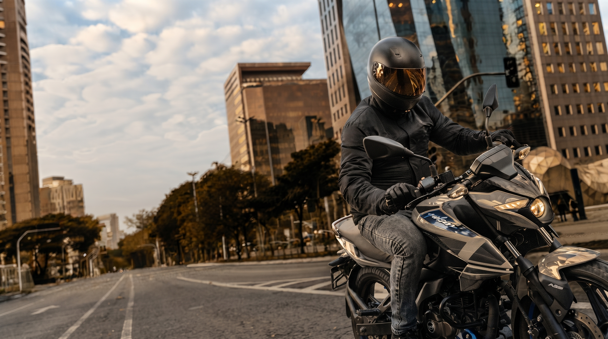
Depuis plus de 20 ans, le nom Pulsar repousse les limites de la moto de série. La N250 marque une étape clé : elle a fait entrer la gamme Pulsar dans la catégorie des 250 cc, avec un monocylindre souple et coupleux refroidi par huile et un ABS double canal.
Pensée pour ceux qui veulent monter en puissance sans se compliquer la vie, la N250 offre couple, confort et sérénité au quotidien comme sur route ouverte. C'est la Pulsar de la maturité — accessible, mais résolument adulte.
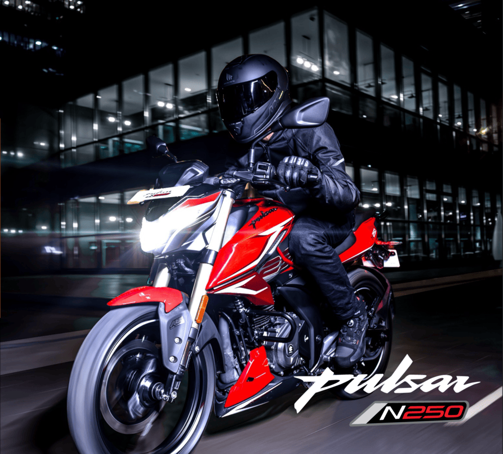
À partir de : 36 000 DH*
TTC. 3 ans de garantie inclus.
La Pulsar N250 incarne la montée en gamme : une vraie naked de 249,07 cc, souple et coupleuse, taillée pour la route comme pour la ville. Son monocylindre refroidi par huile développe 24,5 PS et 21,5 Nm, associé à une injection BOSCH, un ABS double canal et un écran LCD complet. Style musclé, freinage rassurant et confort au long cours : la N250 offre le meilleur du caractère Pulsar dans un format accessible.
Choisissez votre couleur :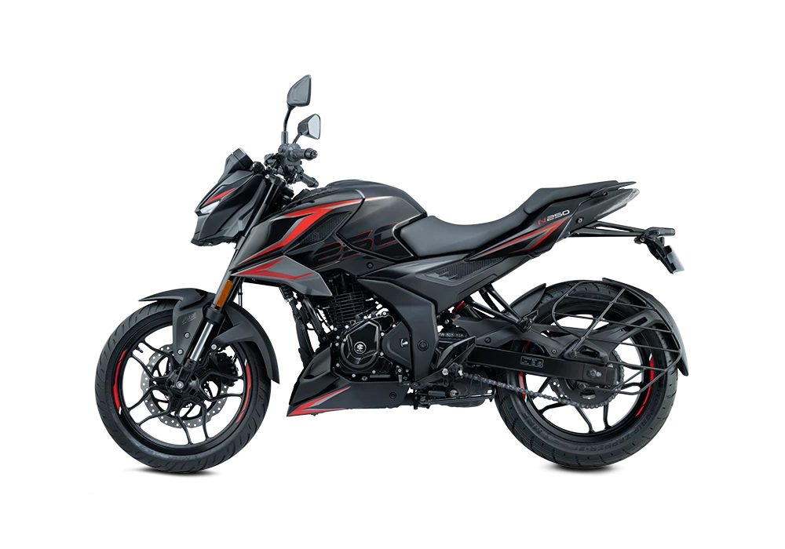
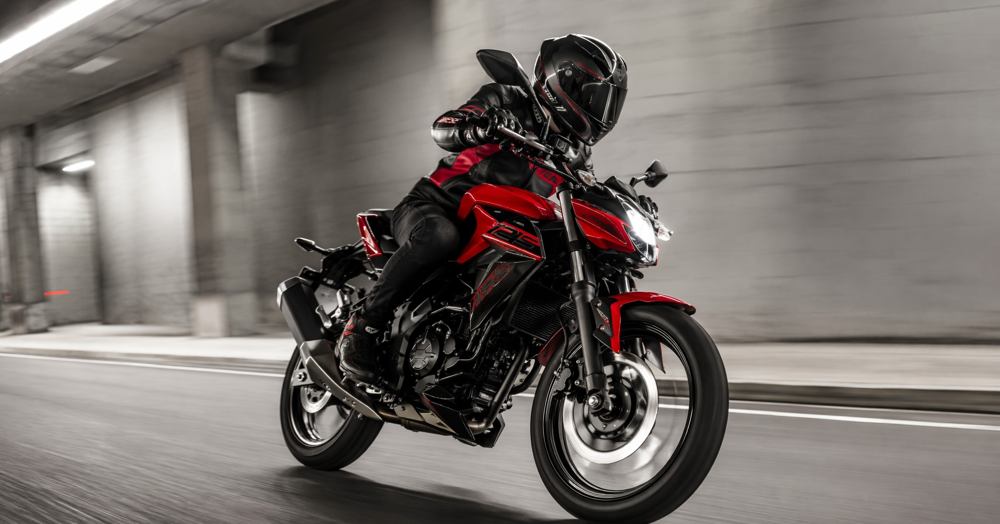
Passez à la vitesse supérieure avec la Pulsar N250. Son moteur monocylindre 4 temps de 249,07 cc refroidi par huile délivre 24,5 PS à 8 750 tr/min et 21,5 Nm de couple à 6 500 tr/min, transmis par une boîte 5 vitesses. Avec son injection BOSCH, son double allumage (2 bougies) et son ABS double canal, la N250 combine des reprises généreuses à un freinage sûr — de quoi dévorer les kilomètres avec le tempérament d'une vraie Pulsar.
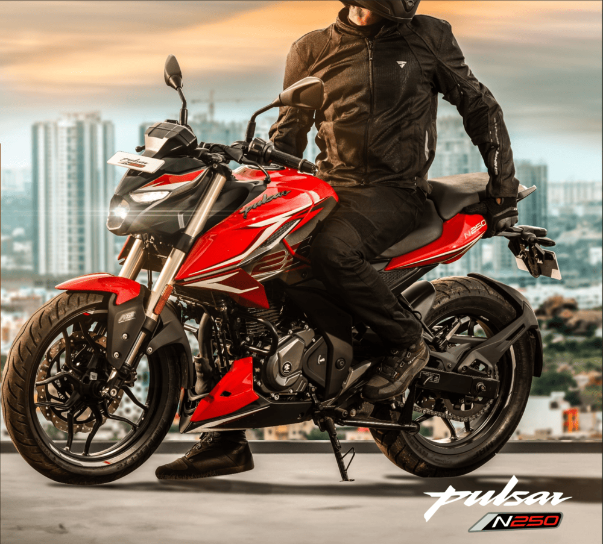
La Pulsar N250 mise sur une technologie rassurante et complète. Son ABS double canal agit sur les deux roues pour un freinage maîtrisé en toutes circonstances, tandis que son écran LCD affiche l'indicateur de rapport, la température d'huile, la pression d'huile et de nombreux témoins de sécurité. Refroidissement par huile, injection BOSCH et démarrage électrique garantissent fiabilité et souplesse, en ville comme sur route ouverte.
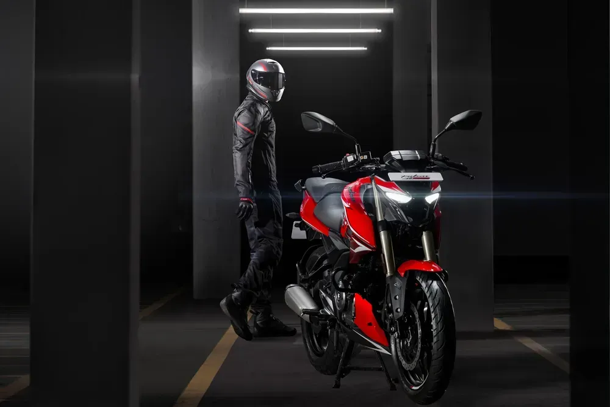
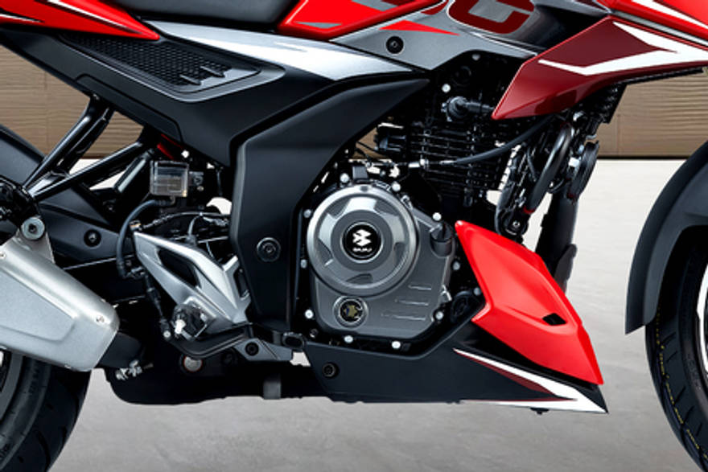
Le cœur de la Pulsar N250 est un monocylindre 4 temps de 249,07 cc refroidi par huile, à injection BOSCH et double bougie. Il délivre 24,5 PS à 8 750 tr/min et 21,5 Nm de couple à 6 500 tr/min, transmis par une boîte 5 vitesses (1 vers le bas, 4 vers le haut) — de la souplesse à bas régime et des reprises franches à la relance.
.png)
Phare avant à LED (codes 22,5 W / route 34,5 W), feux de circulation diurne (DRL) séparés en LED et feu arrière à LED : la N250 affiche une signature lumineuse moderne et une visibilité optimale de jour comme de nuit.
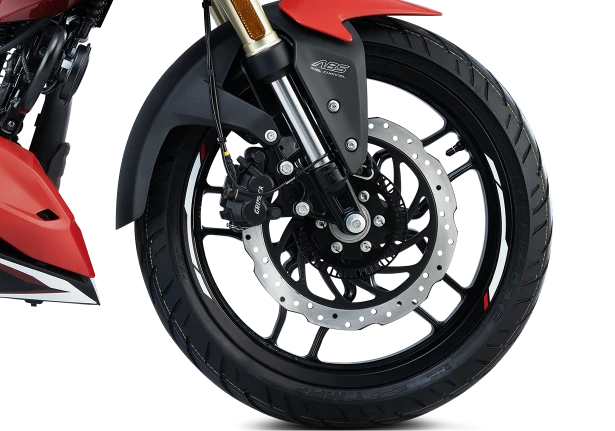
La Pulsar N250 est équipée d'un ABS double canal agissant sur la roue avant et la roue arrière. En freinage d'urgence ou sur chaussée glissante, il évite le blocage des roues et préserve la trajectoire — pour un freinage puissant et maîtrisé en toute confiance.
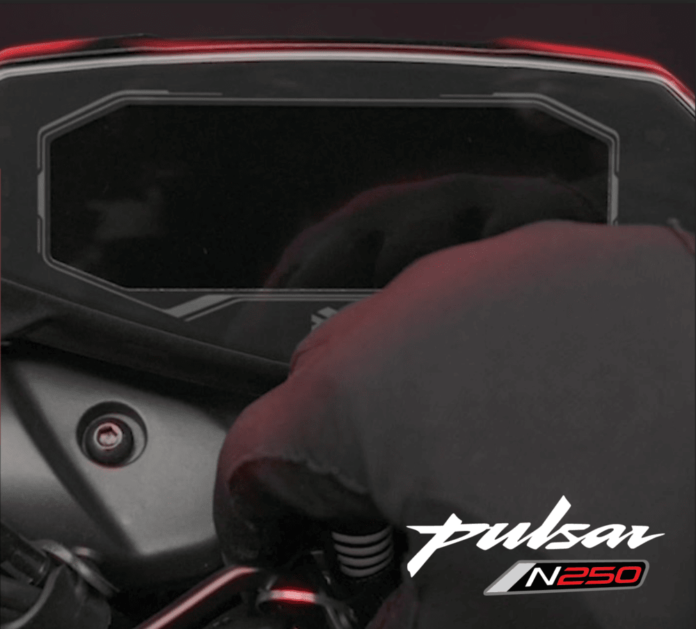
Le tableau de bord LCD de la Pulsar N250 réunit l'indicateur de rapport engagé, la jauge de carburant à barres, le rappel d'entretien, ainsi que les témoins de température et de pression d'huile, de batterie et de béquille latérale — toutes les informations utiles, lisibles d'un coup d'œil.
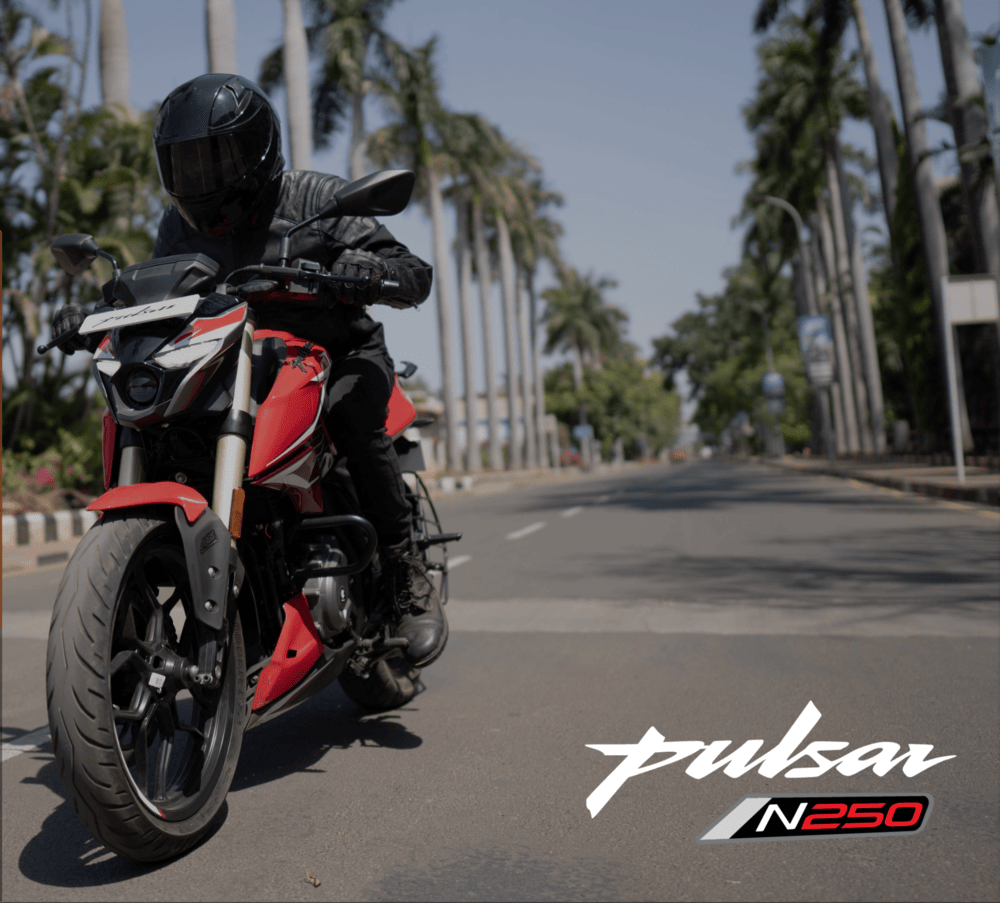
Équipée d'un moteur monocylindre 4 temps de 249,07 cc refroidi par huile, délivrant 24,5 PS @ 8 750 tr/min de puissance maximale et 21,5 Nm @ 6 500 tr/min de couple maximal, associé à une boîte 5 vitesses.
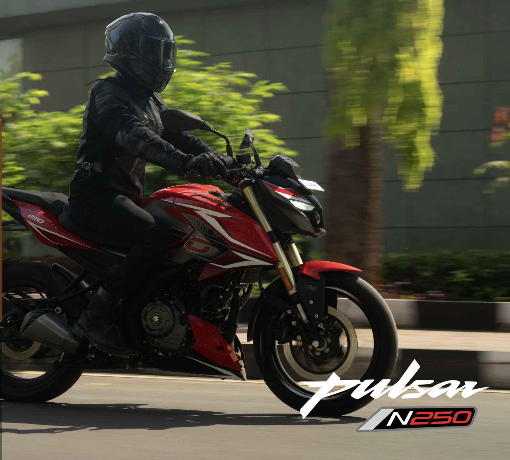
Chez Bajaj Maroc, nous croyons en la qualité et la durabilité de nos motos. C'est pourquoi toutes nos motos bénéficient d'une garantie de 3 ans, pour que vous profitiez de chaque kilomètre en toute tranquillité. Avec Bajaj, vous ne choisissez pas seulement la puissance et le design, vous choisissez le soutien et la confiance.
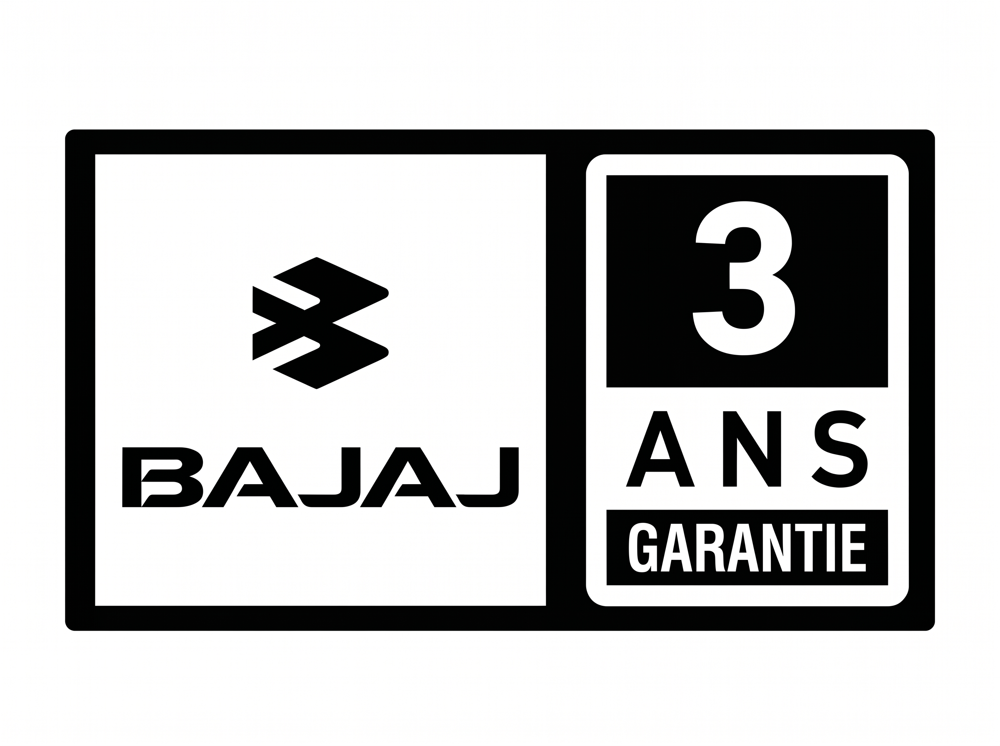